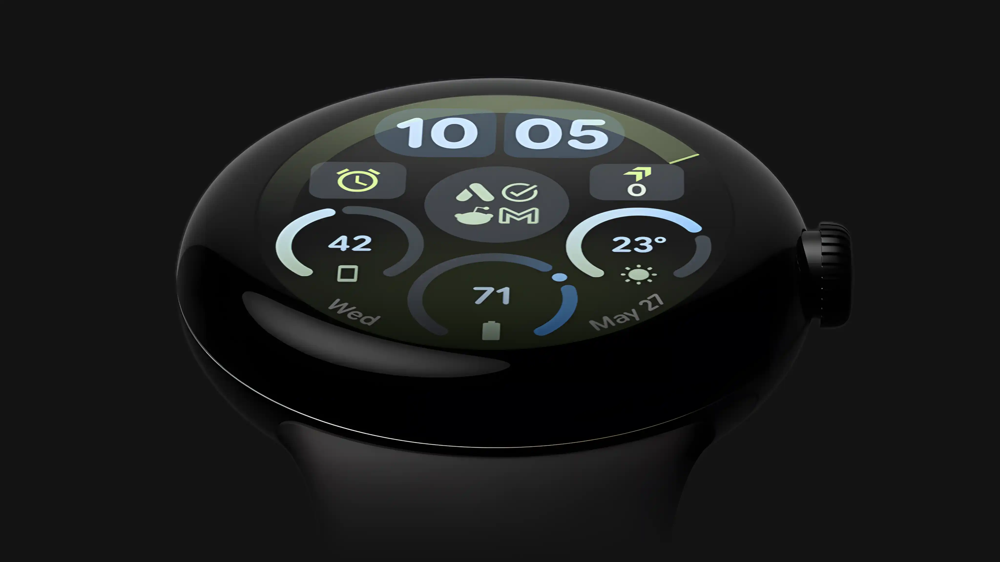

How to Install Wear OS Watch Faces
There are three convenient ways to install and activate watch faces on your Wear OS smartwatch.
1st Way (Preferred): Google Play App
Recommended- Select target device: In the Google Play Store app on your phone, tap the drop-down arrow next to the Install button, select your watch as the target device, and tap Install.
- Check your watch: Check your smartwatch device — a download status notification or icon should appear.
-
Activate the watch face: Once installation is complete, activate the watch face to set it as your current watch face. There are two ways:
- Directly on watch: Touch and hold (long-press) your current watch face, swipe all the way to the left, tap + (Add watch face), and tap on the newly installed watch face.
- From your wearable app: Open your smartwatch companion app on your phone (Google Pixel Watch, Galaxy Wearable, etc.), navigate to the Watch Faces / Downloaded section, and select your new watch face.
Verification Tip: You can verify that the watch face is installed on your watch by opening the Google Play Store app on your watch > My Apps section.
2nd Way: Phone Companion App
Companion App- Open companion app: Open the watch face companion app downloaded to your phone. Ensure your watch is actively connected to your phone via Bluetooth.
- Tap Install: Tap on the Install / Install on Watch button inside the companion app.
- Complete install on watch: On your smartwatch, the Google Play Store listing will open automatically. Tap Install.
- Activate: After installation completes, activate the watch face using either method described in the 1st Way (long-press on watch face or via your phone's wearable companion app).
Payment Loop / Sync Troubleshooting: If the Google Play Store on your watch asks you to pay again, it is a temporary synchronization delay between your watch and Google's servers.
To fix this quickly: toggle Airplane Mode on your watch on and off after a few seconds, or temporarily disconnect and reconnect Bluetooth to force a synchronization.
Google only charges once per Google Account for purchased content; any duplicated payment attempt is automatically cancelled or prevented.
To fix this quickly: toggle Airplane Mode on your watch on and off after a few seconds, or temporarily disconnect and reconnect Bluetooth to force a synchronization.
Google only charges once per Google Account for purchased content; any duplicated payment attempt is automatically cancelled or prevented.
3rd Way: Play Store Website (PC / Mac)
Web Browser- Open link in browser: Open the watch face link in any desktop web browser (Chrome, Safari, Edge, Firefox) on your PC or Mac. You can search for the watch face on Google Play or share the link from your Play Store app.
- Install on more devices: Click the Install on more devices button and select your smartwatch from the device list. (Ensure you are logged in with the same Google Account on both your web browser and your watch).
- Wait for automatic install: Within a few minutes, the watch face installation will start automatically on your smartwatch (make sure your watch has an active Wi-Fi or Bluetooth connection).
- Activate: Once installation completes, activate the watch face on your watch or through your phone's wearable companion app.
Need Help or Having Issues?
Please keep in mind that installation and download mechanisms are handled entirely by Google Play and Wear OS.
Before you consider leaving a negative review, please review the steps above or contact us directly. We are always glad to assist you:
